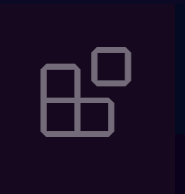

Tema 4 Introducción a VS Code
Como mencionamos anteriormente, Visual Studio Code es uno de los editores de texto más populares entre los desarrolladores. Es un software libre y abierto creado por Microsoft, y cuenta con miles de extensiones creadas por la comunidad que agregan múltiples funcionalidades al editor; entre estas, Live Server, que vas a utilizar a lo largo del curso.
Aprender a utilizar un editor de código es una habilidad muy importante para cualquier programador; estas herramientas nos facilitan muchos aspectos del desarrollo, como navegar por directorios (carpetas), probar nuestro código y escribir más eficientemente mediante atajos, sugerencias y autocompletado.
Barra Lateral Izquierda
El tutorial anterior te mostró cómo crear un documento HTML e instalar extensiones, para esto tuviste que navegar por algunas de las diferentes secciones del editor. Estas son:
 Haz clic en los recuadros para conocer más.
Haz clic en los recuadros para conocer más.
- Explorer - Este es el explorador de archivos. Aquí es donde puedes encontrar todos los archivos y directorios del proyecto en el que estás trabajando.
- Search - Esta herramienta sirve para buscar palabras clave en tus archivos de trabajo. Puedes utilizarlo para encontrar alguna variable o función en tu código.

- Source Control - Esta herramienta nos permite crear o manejar repositorios de git, un sistema de control de versiones.
- Run and Debug - Esta herramienta sirve para correr el código o archivo que tienes abierto desde una terminal y depurarlo.

- Extensions - Esta herramienta sirve para buscar e instalar extensiones de VS Code. Algunas de estas extensiones agregan botones a la interfaz del editor.
Barra Superior
En la barra superior, podemos visualizar menús de opciones que podemos encontrar en otros editores de archivos y código: con el menú de File podemos crear, abrir y guardar archivos en nuestro espacio de trabajo; con el menú de Edit podemos hacer deshacer o rehacer cambios, así como buscar y reemplazar palabras clave en el archivo actual; el menú de Selection nos ayuda a realizar selecciones múltiples, copiar líneas o añadir más cursores en nuestro archivo; a través del menú de View podemos modificar la distribución de los elementos del editor agregando o quitando divisiones sobre el código, y nos permite también abrir herramientas de desarrollo como terminales; el menú de Go sirve para navegar a diferentes partes de nuestro espacio de trabajo, ya sean archivos o líneas de código; el menú de Terminal nos permite abrir terminales y ejecutar código; por último, Help proporciona opciones de ayuda para VSCode.

Nota que casi todas las opciones de la barra superior cuentan con algún atajo que se muestra a la derecha del nombre de la opción. Para poder escribir código de manera rápida, es importante que te aprendas y utilices algunos de estos atajos. Más adelante te mostraremos algunos de los más importantes.
Es importante tener claro en qué consiste nuestro espacio de trabajo. En VS Code, el espacio de trabajo son todas las carpetas y archivos en los que estamos trabajando. En el tutorial anterior creamos un espacio de trabajo en la carpeta "PrimerProyectoWeb". Podemos agregar más carpetas y archivos mientras vaya creciendo nuestro proyecto. También podemos tener configuraciones específicas de VS Code para cada espacio de trabajo, lo cual resulta útil para abrir y acomodar herramientas para proyectos que utilizan diferentes lenguajes.